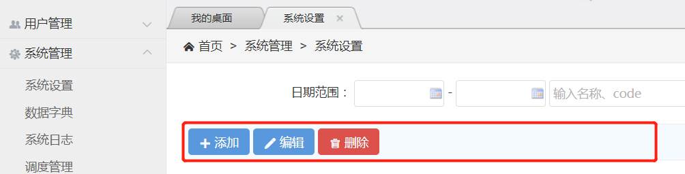
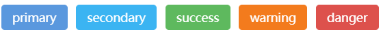

这里说的操作按钮，指的是列表页面的操作按钮，该类型的操作按钮可以通过角色权限控制，按钮显示位置如下图所示：
例如添加按钮，需要在列表页面的Controller类添加控制器方法，并声明@AdminPageButton注解：
@AdminPageButton(name = "添加", imgChar = "#xe600;", showType = AdminPageButton.LAYER, dataType = AdminPageButton.NO)
@RequestMapping({"/toAdd"})
public String toAdd(HttpServletRequest request) {
return getBaseEditJspUrl() + "/data-edit";
}
name表示按钮名字，imgChar表示按钮图标，showType定义按钮的处理方式（LAYER表示通过layer弹出/{baseUrl}/toAdd页面）， dataType定义按钮触发策略（NO表示不需要选中任何数据）
按钮可以设定触发的策略，@AdminPageButton定义了3种dataType策略： 1、不选择任何数据 即可触发 （默认），比如添加 2、必须选择一个数据 才能触发 ，比如编辑 3、必须选择一个或多个数据 才能触发 ，比如删除
按钮点击后，@AdminPageButton定义了3种showType处理方式： 1、将当前页面跳转到 指定url 2、将当前页面通过 layer弹出来 （默认） 3、ajax异步请求服务器，然后弹出处理结果，比如删除按钮
列表页面的父类CommonListController《T extends AbstractValueObject》默认包含3个按钮：添加、编辑、删除，可以通过@AdminPageNoButton注解定义不需要显示的按钮。
@AdminPageButton注解参数详细介绍：
| 参数名称 | 参数类型 | 默认值 | 参数说明 |
|---|---|---|---|
| name | String | 无默认 | 按钮的名字 |
| imgChar | String | 空 | 按钮图标 |
| color | String | 空 | 颜色，目前有五种: primary 提供额外的视觉感, 可在一系列的按钮中指出主要操作 secondary 默认样式的替代样式 success 表示成功或积极的动作 warning 提醒应该谨慎采取这个动作 danger 表示这个动作危险或存在危险  |
| showType | int | LAYER | 按钮点击后的处理方式： AdminPageButton.JUMP：将当前页面跳转到 指定url AdminPageButton.LAYER：将当前页面通过 layer弹出来 （默认） AdminPageButton.AJAX：ajax异步请求服务器，然后弹出处理结果 |
| dataType | int | NO | 按钮的触发策略： AdminPageButton.NO：不选择任何数据 即可触发 （默认） AdminPageButton.RADIO：必须选择一个数据 才能触发 AdminPageButton.CHECKBOX：必须选择一个或多个数据 才能触发 |
| layerHeight | int | -1 | 弹出框的高度，只有showType为LAYER时生效，默认是(100%-100px)，上下各空50px |
| ajaxConfirm | boolean | true | 是否弹出操作确认提示框，只有showType为AJAX时生效 |
可以通过application.yml的jadmin.adminButton参数，设置按钮的显示顺序：
#该属性为后台页面按钮的显示顺序，写在前面，就显示在前面 adminButton: #List - 添加 - 详情 - 编辑 - 删除